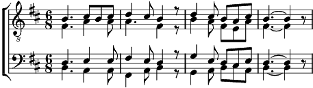

Refrain:
O nuit brillante,
Nuit de vive splendeur
Ta lumière éclatante
Fait le jour dans mon cœur.
1. Étoiles, étoiles
Resplendissez sur Lui
Un Dieu sous d'humbles voiles
Vient à nous cette nuit.
Refrain
2. Merveille, merveille,
Qu'entend-on dans les airs?
Debout, qu'on se réveille,
Qu'on se joigne au concert!
Refrain
3. Louanges, louanges,
Gloire au plus haut des cieux!
Chantons avec les anges:
Paix sur terre en tous lieux!